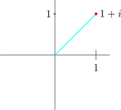

25.3 The \(n^{\text {th}}\) Root of any Complex Number
Let \(\hspace {0.2cm} z = r\big (\cos \theta + i\sin \theta \big ).\hspace {0.2cm}\) Then we can write \[ z = r\big [\cos \big (\theta + 2k\pi \big ) + i \sin \big ( \theta + 2k \pi \big ) \big ]\]
Because adding or subtracting multiples of the \(2\pi \) to the Principal argument it takes us to the same point we started on the complex plane.
\[ z^{1/n} = \Big \{r\big [\cos \big (\theta + 2k\pi \big ) + i \sin \big ( \theta + 2k \pi \big ) \big ]\Big \}^{1/n}\hspace {0.2cm}, \hspace {0.3cm} k = 0, 1,2,3,\cdots \]
Then you can obtain the \(n^k\) roots of \(z\).
\[z^{1/n} = r^{1/n} \Bigg \{ \cos \Big (\dfrac {\theta + 2k\pi }{n}\Big ) + i \sin \Big (\dfrac {\theta + 2k\pi }{n}\Big )\Bigg \}\hspace {0.3cm}\text {where}\hspace {0.2cm} k = 0,1,2,\cdots \]
In exponential form there will be \[r^{1/n}e^{i\theta /n}\hspace {0.2cm} , \hspace {0.3cm} r^{1/n}e^{i\frac {\theta + 2\pi }{n}}\hspace {0.2cm} ,\hspace {0.2cm}\cdots \]
\[ z^{1/n} = \Big \{r\big [\cos \big (\theta + 2k\pi \big ) + i \sin \big ( \theta + 2k \pi \big ) \big ]\Big \}^{1/n}\]
Find the cube root of unit
\(z = \sqrt [3]{1}\hspace {0.3cm} \implies \hspace {0.3cm} z = 1 + 0 i\)
\(r = |z| = 1\)
\(\theta = 0\) (Principal argument)
\(0, \hspace {0.2cm} 2\pi ,\hspace {0.2cm} 4\pi , \hspace {0.2cm} 6\pi ,\hspace {0.2cm} 8\pi , \hspace {0.2cm} \cdots \)
\begin {align*} \sqrt [3]{1} & = \Big (\cos \theta + i\sin \theta \Big )^{\dfrac {1}{3}}\\ \sqrt [3]{1} & = \Big [\cos \big (\theta + 2k\pi \big ) + i \sin \big ( \theta + 2k \pi \big )\Big ]^{\dfrac {1}{3}}\\\\ & = \cos \Big (\dfrac {\theta + 2k\pi }{3}\Big ) + i \sin \Big (\dfrac {\theta + 2k\pi }{3}\Big ) \hspace {0.3cm}, \hspace {0.3cm} k = 0, 1,2 \end {align*}
\[\sqrt [3]{1} = \cos \dfrac {2k\pi }{3} + i \sin \dfrac {2k\pi }{3} \hspace {0.4cm}, \hspace {0.5cm} \theta = 0\]
\begin {align*} \text {When}\hspace {0.4cm} k = 0, & \hspace {0.3cm} \cos 0 + i\sin 0 = 1\\\\ k = 1, & \hspace {0.4cm} \cos \Big (\dfrac {2\pi }{3}\Big ) + i\sin \Big (\dfrac {2\pi }{3}\Big ) = \Big (-\dfrac {1}{2} + i\dfrac {\sqrt {3}}{2}\Big )\\\\ k = 2, & \hspace {0.4cm} \cos \dfrac {4\pi }{3} + i\sin \dfrac {4\pi }{3} = \cos \Big (-\dfrac {2\pi }{4}\Big ) + i\sin \Big (-\dfrac {2\pi }{4}\Big ) =\cos \dfrac {2\pi }{4} - i\sin \dfrac {2\pi }{4} = -\dfrac {1}{2} - i\dfrac {\sqrt {3}}{2} \end {align*}
\(\therefore \hspace {0.3cm}\) The cube roots of unit are \(\hspace {0.2cm} 1, \hspace {0.2cm} w, \hspace {0.2cm} w_2\)

Find in the form \(\hspace {0.2cm}\displaystyle {re^{i\theta }}\hspace {0.2cm}\) the fourth root of \(\hspace {0.2cm} 1 + i\).

\(\theta = \dfrac {\pi }{4} \hspace {0.5cm}- \) Principal argument
\(r = \sqrt {2}\)
\begin {align*} z^{1/4} & = \Bigg \{r \big [ \cos \big (\theta + 2k\pi \big ) + i \sin \big (\theta + 2k\pi \big )\big ]\Bigg \}^{\dfrac {1}{4}}\\\\ & = \Big (2^{1/2}\Big )^{1/4}\Bigg \{ \cos \Big (\dfrac {\dfrac {\pi }{4} + 2k\pi }{4}\Big ) + i \sin \Big (\dfrac {\dfrac {\pi }{4} + 2k\pi }{4}\Big )\Bigg \}\\\\ & = 2^{1/8}\Bigg \{ \cos \Big (\dfrac {\pi + 8k\pi }{16}\Big ) + i \sin \Big (\dfrac {\pi + 8k\pi }{16}\Big )\Bigg \}\\ \end {align*}
\begin {align*} k = 0,& \hspace {0.4cm} 2^{1/8}\hspace {0.2cm}\Big \{\cos \dfrac {\pi }{16} + i \sin \dfrac {\pi }{16}\Big \} = 2^{1/8}\hspace {0.1cm}e^{i\pi / 16}\\\\ k = 1,& \hspace {0.4cm} 2^{1/8}\hspace {0.2cm}\Big \{\cos \dfrac {9\pi }{16} + i \sin \dfrac {9\pi }{16}\Big \} = 2^{1/8}\hspace {0.1cm}e^{i 9\pi / 16}\\\\ k = 2,& \hspace {0.4cm} 2^{1/8}\hspace {0.2cm}\Big \{\cos \dfrac {17\pi }{16} + i \sin \dfrac {17\pi }{16}\Big \} = 2^{1/8}\hspace {0.1cm}e^{i 17\pi / 16}\\\\ k = 3,& \hspace {0.4cm} 2^{1/8}\hspace {0.2cm}\Big \{\cos \dfrac {24\pi }{16} + i \sin \dfrac {24\pi }{16}\Big \} = 2^{1/8}\hspace {0.1cm}e^{i 24\pi / 16} \end {align*}

Sample Questions
- 1.
- Find in the form \(\hspace {0.2cm} re^{i\theta }\hspace {0.2cm}\) the cube roots of \[(\text {a})\hspace {0.4cm} - 1\hspace {1.5cm} (\text {b})\hspace {0.4cm} j \hspace {1.5cm} (\text {c})\hspace {0.4cm} 1 + i \hspace {1.5cm} (\text {d})\hspace {0.4cm} \dfrac {1 + i}{1 - i}\]
- 2.
- Find two values of \(z\) for which \(\hspace {0.2cm} \cos z = \dfrac {5}{4}\hspace {0.2cm}\) using \(\hspace {0.2cm} \cos z = \dfrac {e^{iz} + e^{-iz}}{2}\)
- 3.
- Write the following in the form \(\hspace {0.2cm} a + ib, \hspace {0.2cm} a, b \in \mathbb {R}\)
- (a)
- \(\hspace {0.3cm}\displaystyle { - 4\Big [ \cos \dfrac {3\pi }{2} + i\sin \dfrac {3\pi }{2}\Big ]}\)
- (b)
- \(\hspace {0.3cm}\displaystyle {\dfrac {\Big [2\Big (\cos \dfrac {\pi }{4} + i \sin \dfrac {\pi }{4}\Big )\Big ]^2}{3\Big ( \cos \dfrac {\pi }{3} + i \sin \dfrac {\pi }{3}\Big )}}\)
- (c)
- \(\hspace {0.3cm} \displaystyle {\dfrac {7\Big (\cos \dfrac {\pi }{2} + i \sin \dfrac {\pi }{2}\Big )}{3\Big (\cos \dfrac {\pi }{4} + i\sin \dfrac {\pi }{4}\Big )}}\)
- 4.
- Evaluate \(\hspace {0.3cm} \displaystyle {\Big ( \cos \dfrac {\pi }{6} + i \sin \dfrac {\pi }{6}\Big )^{-3}}\)
- 5.
-
- (a)
- Find the fourth roots of \(\hspace {0.2cm} z = 16i\)
- (b)
- Express \(\hspace {0.2cm} \big ( 1 + i\big )^{29}\hspace {0.2cm}\) in the form \(\hspace {0.2cm} r \big (\cos \theta + i \sin \theta \big ), \hspace {0.3cm} 0\leq \theta \leq \pi \).
- 6.
-
- (a)
-
- i.
- Use De Moivre’s theorem to prove that \(\hspace {0.2cm} \cos 3 \theta = \cos ^3\theta - 3\cos \theta \sin ^2\theta \)
- ii.
- Express \(\hspace {0.2cm}\dfrac {\cos 3\phi + i\sin 3\phi }{\big (\cos 2\phi - i \sin 2\phi \big )\big (\cos \phi - i\sin \phi \big )^5}\hspace {0.3cm}\) in the form \(\hspace {0.2cm} \cos n \phi + i \sin n\phi \), where \(n\) is an integer.
- (b)
- Find the complex cube roots of \(\hspace {0.2cm} -27i\hspace {0.2cm}\) in the form \(\hspace {0.2cm} a + ib,\hspace {0.2cm}\) and show them on and Argand
diagram.
- 7.
- Express \(\hspace {0.2cm}\dfrac {\sqrt {15} + i\sqrt {15}}{\big (\sqrt {3} - \big )^9}\hspace {0.2cm}\) in the form \(\hspace {0.2cm} r\big (\cos \theta + i\sin \theta \big )\hspace {0.3cm}, \hspace {0.3cm} 0\leq \theta \leq 2\pi \)
- 8.
- Given \(\hspace {0.2cm} w = - 1 + i\hspace {0.2cm}\) and \(\hspace {0.2cm} z = -2i\)
- (a)
- Express \(\hspace {0.2cm} w\hspace {0.2cm}\) and \(\hspace {0.2cm} z\hspace {0.2cm}\) in the polar form where \(\hspace {0.2cm} \theta \in \big (0, 2\pi \big )\)
- (b)
- Express \(\hspace {0.2cm}wz\hspace {0.2cm}\) in polar form where \(\hspace {0.2cm} \theta \in \big (0, 2\pi \big )\)
- (c)
- Find the square roots of \(z\) in Cartesian form.
- 9.
- Given two complex numbers \(\hspace {0.2cm} w = -2 + i2\sqrt {3}\hspace {0.2cm}\) and \(\hspace {0.2cm} z = 1 - i\).
- (a)
- Write \(w\) and \(z\) in polar form.
- (b)
- Find \(\hspace {0.2cm} w^8 - z^6\hspace {0.2cm}\) in the form \(\hspace {0.2cm} a + i b\).
- (c)
- Find \(\hspace {0.2cm}\dfrac {w^8}{z^6}\hspace {0.2cm}\) in the form \(\hspace {0.2cm} a + i b\).
- 10.
- Find the fourth roots of \(\hspace {0.2cm}\sqrt {3} - i\)
Questions on this section
Stuck on something here? Ask below and it stays attached to this topic.